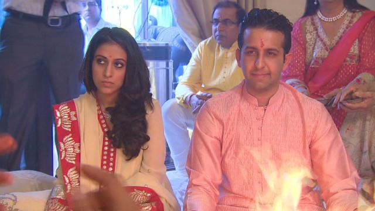

In America we know marriage as the coming together of two people who love each other and want to spend the rest of their lives together, however in other parts of the world marriage is not always the coming together of people who love each other or in some cases even know each other, these are arranged marriages. In most western civilizations there is few if any at all arranged marriages where the people who are being married have little to no say in the matter. However, in the Middle East this is a different story, there are many arranged marriages for a variety of reasons.
One reason is that this stops people from marring outside of their religion and their social class. In the Middle East the predominate religion is Islam, and people who fallow this religion are not allowed to marry people who do not fallow the same faith. By two families setting up an arranged marriage between their children this stops the possibility that they marry outside of their religion. In western culture we believe that people have a right to choose what religion they wish to fallow and that they can change if they see fit, this is much harder to do in the Middle East. This is one of the reasons why we find arranged marriages to be a taboo. Westerners think that this is fundamentally wrong because you are by taking away someone right to choose what they want to believe.
Another reason is for wealth, if one family is poorer than another they may set up an arranged marriage for their child with a wealthier family. This is so that the poorer family can earn some money to support themselves and so that their child can possibly live a more comfortable and happy life. Also, an arranged marriage can be set up between two wealthy families to ensure that their wealth stays in their own family. Something that normally accompanies wealth is status or reputation, this can be another key factor in why two families are getting an arranged marriage.
In western cultures it is hard for us to grasp why two families would want an arranged marriage for these reasons as we normally view people who marry someone else for money rather than actually loving them to be a bad thing. We think of people who marry for money or power or social status in a bad way because to us we think they were just using the other person as a means to an end, just a way of getting to what they truly desire. This is not what we use marriage for, we use it as a symbol of showing two people’s love and devotion to one another.
Depending on where you grow up in the world you may have different view on arranged marriages than other people but it is important to understand, and to know what other people think it is and how they think it should be done. Although arranged marriages seem bad to people of western cultures because it takes away the individuals freedoms and rights, eastern cultures view it as an important part of their heritage and an important part in the preservation of their way of life and culture. This is why arranged marriages causes such a cultural gap and forms such a taboo subject for many people.